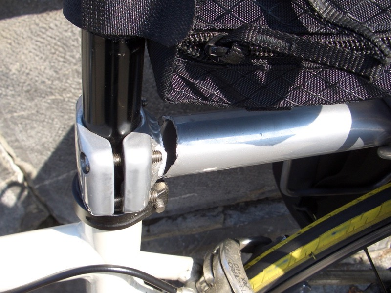

不知道在亢奮什麼，一整晚心悸的睡不好覺。
翻來覆去一直游離在睡著和清醒之間，不好好睡上一覺怎麼會有精神騎車？
就這麼躺到將近十點，邊休息邊想，『今天是要繼續騎車呢？還是把車寄在旅館，出去觀光一天？』
看天氣還不錯，就先騎車出去晃晃，看怎麼樣再決定吧，反正旅館那麼多，要留下來過夜太容易。
騎著車，又往取聖水的教堂路上前進，再拍一段人潮洶湧的樣子。
拍著拍著，車子突然緊急煞車，差點沒摔下去，真是奇怪了，好端端的怎麼會這樣呢？
查看一下狀況，包包也沒有卡到輪胎呀，再仔細一看，不對呀 >"< 為什麼整個包包是壓在輪胎上的？

我的老天爺呀∼貨架整個折斷了！嗚 T_T 終於到了這一天了，背著馬鞍背包騎車的日子來了。
其實早就料到有一天它一定會斷掉，環法剛開始貨架的狀況就不是很好，但是也買不到更好的替代品。
現在斷掉，不知是幸還是不幸？起碼我是在城市裡斷掉，而不是荒郊野外，或是爬庇里牛斯山爬到一半時斷。
遇到這樣的難題，該怎麼辦呢？
如果我是大雄的話......『小叮噹∼∼∼！』
就這麼回事，今天公休。